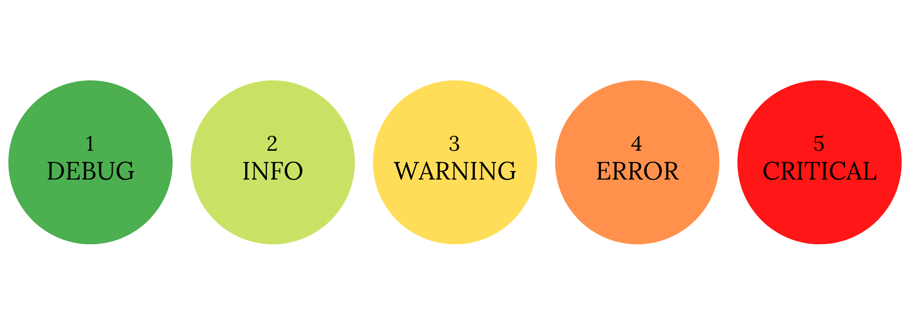

The Python logging module has been part of my toolkit since the very beginning of my data science journey (thanks to a former colleague who helped me build my first web scraper and showed me some good practices to start with early rather than later).
Now, whenever I create a python script (especially ones that run automatically without any user involvement), I always use the logging module and I can’t even count the number of hours it has saved me over the years.
The Python logging module is part of the standard library, so no installation is required. In this post, I am going to show you how you can get started with it right away. If you need more information, you can view the logging documentation here.
You can import the logging library with just this line:
import loggingWhen you want to create log messages using the logging module, you need to create a ‘logger’. However, there is a default logger that you can use to get started without needing to configure your own. This has been sufficient for me in most of my projects, but if you are working on more complex projects then I recommend you create your own logger.
Loggers have 5 alert levels and they are used to log events that occur at a specified level of severity. This is their order:
 You can assign a severity level to your logging message like this:
logging.debug("Just a little debug action")
logging.info("Letting you know what's happening...")
logging.warning("You have been warned")
logging.error("STOP! There has been an error!")
logging.critical("CRITICAL FAILURE!")By default, the output will show a standard format as ‘level: name: message’ but this can be changed (more on that later).
The default, or root, logger is set to only show messages with a severity message of WARNING or above. This means that any messages with the severity level DEBUG or INFO will not be printed out. You can change this too!
You can configure the logger by using the basicConfig() method which can only be called once, otherwise any subsequent calls will not take effect. These are the common parameters you might use and we will discuss them in more detail below:
level : this sets the severity levelfilename : this specifies the file namefilemode : if the filename is given then the file will be opened in this mode. The default is a, which means appendformat : the format of the log messageStarting with the level parameter, you can set the severity level of the log messages and the logger will output all messages at or above the level you specify. For example:
logging.basicConfig(level = logging.ERROR)
logging.debug("This debug message will not be logged")
logging.error("This error message will be logged")Both the filename and filemode parameters determine whether the logger should output to a file rather than to the console. If no filename is specified then by default the logger will print the logs to the console.
The filemode parameter is set to ‘a’ by default, which means append but you can also use ‘w’ for writing which will overwrite any other log files with the same filename.
The format parameter allows you to customise how you would like the output to look using certain attributes such as:
%(asctime)s - displays the date and time%(message)s - displays the logging message%(process)d - displays the process ID%(levelname)s - displays the severity level of the message%(filename)s - displays the name of the file the log is written to%(lineno)d - displays the line number of where the logging call was issued from in the source file%(funcName)s - name of the function containing the logging callThis information can be very useful fo narrowing down exactly where some code might of gone wrong and will speed up the time it takes to find errors or problems. This is my preferred format string:
basicConfig(format = "%(asctime)s — %(levelname)s — %(funcName)s: %(lineno)d — %(message)s")If you are wrapping your code in a try-catch then you can use some additional options inside an exception handler so that the log will contain the exact reason for the error. This is very helpful because otherwise every time you encounter an error you will need to manually run your script in a new environment at the line that causes the error just so that you can identify what exactly went wrong. If this is all contained within the log file, it can significantly reduce the time it takes to identify what went wrong and why.
From within your exceptions handler you can use logging.exception("Error here") for logging the error at the severity level ERROR; otherwise you could also use logging.error("Exception here", exc_info=True).
They are the same but the first one is more succinct. The exec_info = True parameter is what provides more information on the error and it can be used at any other severity level such as logging.critical("Exception here", exc_info=True).
The Python logging module allows you to rotate the files according to a specified interval. It also has the option to delete older log files to save space (and your sanity!).
The TimeRotatingFileHandler will allow us to set parameters that control how often we want a new log file to be created as well as how many log files to keep. It can be used within the basicConfig() that we discussed earlier so that we can continue to use the root logger.
handlers = [logging.handlers.TimeRotatingFileHandler(filename, when='d', interval=1, backupCount=10)]Keep these 3 points in mind when using the TimeRotatingFileHandler:
logging.handlers"my log " + date + ".txt" because this handler will actually append the appropriate date/time onto the extension of your log file every time it executes. This is what allows the handler to identify old log files and delete according to your specifications.TimeRotatingFileHandler together with filename or filemode within the basicConfig. Doing so will return an error.Below you will find a complete example of how I configure and use the logging module:
import logging
import logging.handlers
# Define logging
LOG_FILENAME = "my log file.txt"
logging.basicConfig(handlers = [logging.handlers.TimedRotatingFileHandler(LOG_FILENAME,
when='d', interval=1, backupCount=10)],
level = logging.INFO,
format = "%(asctime)s — %(levelname)s — %(funcName)s: %(lineno)d — %(message)s")
def my_basic_function():
try:
logging.info("Starting the basic function...")
x = 10
y = 0
x / y
except Exception as err:
logging.info("Error: There was an error with the function!")
logging.exception(err)
else:
logging.info("Function executed successfully!")
finally:
logging.info("End of function")This is what the log file looks like:
2021-01-26 19:30:57,773 — INFO — my_basic_function: 16 — Starting the basic function...
2021-01-26 19:30:57,778 — INFO — my_basic_function: 21 — Error: There was an error with the function!
2021-01-26 19:30:57,778 — ERROR — my_basic_function: 22 — division by zero
Traceback (most recent call last):
File "logging_test.py", line 19, in my_basic_function
x / y
ZeroDivisionError: division by zero
2021-01-26 19:30:57,779 — INFO — my_basic_function: 26 — End of functionI hope this helps you to get started with the logging module in python. Connect with me on Twitter if you have any questions!